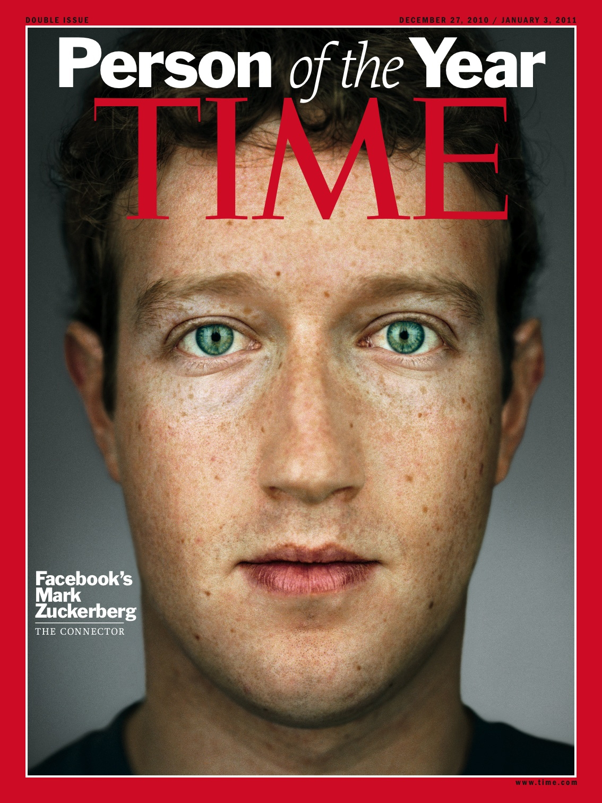

Australian, now 43, lives in an office converted into a studio apartment in the Ecuadorian embassy in London, equipped with a bed, telephone, sun lamp, computer, shower, treadmill, and kitchenette. Police remain stationed outside the building to arrest him should he try to leave at a cost of 3.25 million pounds a year. Over 9,000 pounds per day (or $13,413).
Assange had a nomadic childhood, and lived in over thirty different towns by his mid-teens. Studied programming, mathematics, and physics but never completed a degree. At 16 he started hacking. He was really really good at hacking and programming. In his early days he hacked into the Pentagon and other U.S. Department of Defense facilities, the U.S. Navy, NASA, Australia's Overseas Telecommunications Commission; Citibank, Motorola, Panasonic, and Xerox to name a few.
At 35 he founded Wikileaks in Iceland with a few other activist. WikiLeaks publish many notable documents as noted below. As WikiLeaks grew in popularity as did it's editor-in-cheif. He became a public figure and with the fame came an increased scrutiny. The U.S. authorities began investigating WikiLeaks and Assange after Wikileaks released the Manning material. The Swedish Prosecution Authority also is investigating Assange over sexual charges. He was granted political asylum by the Ecuadorian embassy. Last month, the Swedish prosecutors said they would be willing to interview Assange in the UK. If he went to Sweden for a trial he would lose all his political immunity, leaving him subject to the US where he could face 40 years.
Chelsea (Born Bradley) Manning released the largest set of confidential documents ever leaked to the public. Including this video showing the July 12, 2007 Baghdad airstrike
Guantanamo Bay Operating Procedures BNP membership list released Afghan War logs How to stop leaks document ScientologyAs we read this week, the internet and Scientology don't mix. Assange said that a religious organization was pretty inconsequential in terms of what we normally do. But after receiving these legal threats from them ... it was time for us to make a stand.
Top of the list in 2010 was the creator of Facebook and the creator of Wikileaks.
Both express a desire for openness and transparency. Both understand the importance of sharing on the internet.
Kim Dotcom a self-proclaimed internet entrepreneur was the founder of now-defunct file hosting service Megaupload.
Edward Snowden leaked classified information from the National Security Agency (NSA) to the mainstream media, starting in June 2013.
Trailer for Wikileaks Movie